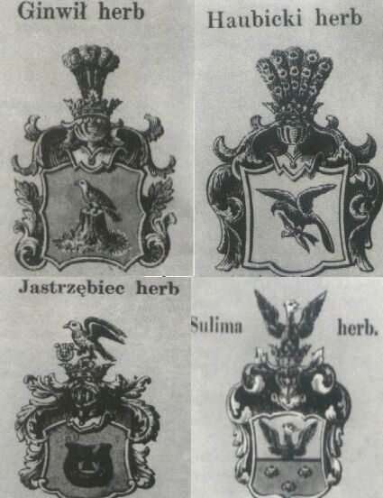

HISTORIA SOKOLNICTWA
Początków sokolnictwa, oznaczającego sztukę układania ptaków drapierznych oraz łowy przy ich użyciu, nie można do końca ustalić. Udaje się jednak stwierdźić, że było znane już u prymitywnych ludów pierwotnych. Niedoskonałość broni miotającej, brak należytej organizacji w polowaniach zespołowych mogły nasunąć ówczesnemu myśliwemu myśl, by dla zdobycia zwłaszcza zwierzyny lotnej użyć ptaków drapieżnych, odpowiednio ułożonych i zaprawionych do łowów.
Chwytaniem ptaków myśliwskich na dalekiej północy, a także w centralnej Rosji oraz dostarczaniem ich do sokolarni zajmowali się chłopi, specjalnie do tego przyuczeni oraz opłacani. Jednak w 1723 roku na liście urzędników carskiego dworu znajdował się tylko już jeden sokolnik. W 1800 ustawa pozbawia trudniących połowem sokołów "mużynków" dawnych przywilejówi uprawnień, równając ich z innymi chłopani pańszczyźnianymi. Niewątpliwie dla rozwoju i upowszechnienia sokolnictwa w średniowieczu największe zasługi położyli cesarze niemieccy. Fryderyk I Barbarossa urządzaniem łowów sokolich zasłynąl nie tylko w swoim kraju ale wprowadził je także i spopularyzował we Włoszech.
Warunki przyrodnicze naszego kraju, bogactwo i różnorodność zasobów zwierzyny łownej sprawił, że myślistwo stało w Polsce wyżej niż na całym kontynęcie eurpoejskim. Istnieją historyczne przekazy świadczące o tym, że Bolesław Chrobry I sprowadzał i utrzymywał ptaszników i łowców z wielu krajów. Gall Anonim podkreśla zamiłowanie Bolesława II Śmiałego do łowów z sokołami. Mieszko III Stary rozszeża istniejące od dawna prawo, zwane leśnym, które książętom gwarantowało wyłączność polowania, utrzymywania sokolników i bobrowników. Prawo to zabraniało zatem wolnego myślistwa w dobrach szlacheckich. Z rozsianych w piśmiennictwie cytatów wynika, że w wieku XIII w Polsce sokolnictwo znane było wszędzie bardzo dobrze, świadczą o tym chociażby utrzymywane na dworach książąt i znaczniejszych możnowładców sokolarnie, z których najsłynniejsza znajdowała się w Łowiczu, Niepołomicach, Miechowie i Płocku. Kazimierz III Wielki, otrzymując corocznie w darach lennych jako hołd od Krzyżaków z Pomorza prócz 24 psów myśliwskich 18 sokołów. Kazimierz Wielki, sam zamiłowany myśliwy, przyczynia się w dużym stopniu do rozpowszechnenia sokolnictwa wśród możnowładców przez rozszeżenie przywilejów i ograniczenie wyłączności tego rodzaju łowów tylko dla panujących. Za Jagillonów sokolnictwo staje się powszechnie uprawianym rodzajem łowiectwa. Dogadzając rycerskiej fantazji, stanowiło ono jednocześnie doskonałą formę zaprawy w polu. Zmienia się ranga społeczna sokolnika który w średniowieczu był właściwe tylko sługą noszącym na łowy pańskie, wytresowane przez siebie sokoły, zaś staje się na dworze królewskim poważnym urzędnikiem (prawie dostojnikiem państwowym). Z nieznanych przyczyn po panowaniu króla Henryka Walezego w Polsce sokolnictwo, na krótko, podupada, tak że Stefan Batory z urządzeń sokolniczych i ptaków myśliwskich nie zostaje w sokolarniach królewskich zgoła prawie nic. Przez kilka lat od nowa organizuje łowiectwo, zakłaka szkoły sokołów i sprowadza sokolników z Niemiec. W sztuce układania sokołów w XVI wieku przodowało wielu Polaków. Najlepiej z nich znany jest Janusz Latarski. Zasłynął on w całej Europie, a dwory panujących usilnie zabiegały by zapewnić sobie jego usługi. Wielką znajomość sokolnictwa posiadał także Mateusz Cygański. Autor doskonałego dzieła o różnych sposobach polowania na zwierzyną lotną, zatytułowanego "Myślistwo ptasze, w którym się opisuje sposób dostawania wszelkiego ptaka". Za króla Stefana panowła moda noszenia czpek kity z piór ptasich (czaplw białe ), do polski przyniósł ją Henryk Walezy. Wśród zamożniejszej szlachty często bywały drogocenną ozdobą głowy panny młodej. W owych kitach znajdować się mogło od 80 - 100 - czapla ma ich na głowie zaledwie dwa, jedno piórko kosztowało dukata, a czasem znacznie więcej. Jeszcze w XVIII w. kołpak rysi z czaplim piórem stanowił najwyższy strój. Łowy na czple odbywano wyłącznie z sokołami. Król Zygmunt III Waza sam nie zajmował się łowiectwem, jednakże na myślistwo łożył wielkie sumy, aby zachować je na wysokim poziomie. Powszechnie sądzi się,że po świetnym rozwoju sokolnictwa za króla Stefana-za panowania Zygmmunta III, podupada ono znacznie i dopiero Władyslaw IV przywraca mu calą jego świetność. Szczegulnie upodobał on sobie łowy na czaple biale,podczas jednych takich łowów lekko zbarczonej czapli, wyrwano ozdobne piórka z czuba po czym zwrócono wolność.Przed wypuszczeniem król nakazał zalożzyć jej na szyję zlotą obrączkę z napisem upamietniajacym to wydarzenie i date łowow 18 maj 1647 r. Polujac z sokołami po raz drugi zdobył ją Jan III Sobieski w dniu 19 lipca 1677r. Ukladane w owym czasie sokoły w Polsce były wysoko cenione, to też z Zachodu do Polski przybywali wysłannicy Hiszpanii, Francji, Niemiec, by nabywać ptaki ułożone do myślistwa. W owym czasie ułożone w Polsce sokoły były cenione za granicą, toteż królowie, którzy posyłali je w darze innym monarchom, otrzymywali w rewanżu wykwintne i bogate upominki. August II otrzymywał najlepsze sokoły z Danii. Gdy jesnak król duński, miłujący również ten rodzaj polowania, wydał rozporządzenie i surowy zakaz
sprzedawnia sokołów do cudzych krajów, na dworach polskich magnatów sokoła jako ptaka łowieckiego zastępuje jastrząb gołębiarz. Król August III jeszcze uprawia łowiectwo z sokołami. Prowadzi też handel wymienny tymi ptakami, otrzymując za nie bogate dary. Jednak w tym okresie daje się już dostrzec powolny upadek sokolnictwa. Czasy Stanisława Augusta Poniatowskiego to już zupełnie inna epoka w dziejach polskiego myślistwa. Sam król nie poświęcał się, ani nie hołdował owej pasji. Niemniej jednak za jego panowania, zwłaszcza na wschodnich rubierzach Rzeczypospolitej, powszechnie jeszcze polowano z ptakami drapieżnymi. Początek XIX wieku przynosi w Polsce zagładę dawnego sokolnictwa.
1. Sokolnictwo i Jastrzębiarstwo
Początków sokolnictwa, oznaczającego sztukę układania ptaków drapierznych oraz łowy przy ich użyciu, nie można do końca ustalić. Udaje się jednak stwierdźić, że było znane już u prymitywnych ludów pierwotnych. Niedoskonałość broni miotającej, brak należytej organizacji w polowaniach zespołowych mogły nasunąć ówczesnemu myśliwemu myśl, by dla zdobycia zwłaszcza zwierzyny lotnej użyć ptaków drapieżnych, odpowiednio ułożonych i zaprawionych do łowów.
2. Sokolnictwo w krajach Azji, Ameryki i Afryki
Najwięcej możliwości do uprawiania takiego myślistwa znajdowano na rozległych stepach centralnej i wshodniej Azji. Hindusi na 400 lat p.n.e uprawiali ten rodzj łowów z dużym zamiłowaniem, zaś Mongołowie, znani byli jako właściciele najlepszych psów i sokołów. Zwłaszcza wśród Mongołów łowy z sokołami i orłami przybrały charakter najkosztowniejszej rozrywki. Począwszy od VIII wieku także Persowie nie szczędzą wysokich nakładów na wyszukiwanie specjalistów, potrafiących w sposób najkosztowniejszy i najorginalniejszy zdobić rękawice, wabidła i karnale. Na skutek cierpliwej i umiejętnej tresury oraz stopniowego zaprawiania ptaków do atakowania coraz to silniejszej zdobyczy doprowadzić można było do tego że duże orły i sokoły uderzały na wilki stepowe ale także na hasło sokolnika śmiało rzucały się i przytrzymywały człowieka. Na terenie afrykańskim sokolnictwo najprawdopodobniej nie było znaną i uprawianą formą łowów. Nie natrafiono dotąd na żadne malowidła, rzeźby czy inskrypcje, które świadczyłyby, iż polowano tam , wykorzystując ptaki drapieżne. Podobnie rzecz się ma na terenia Ameryki.
3. Sokolnictwo w Europie
Chwytaniem ptaków myśliwskich na dalekiej północy, a także w centralnej Rosji oraz dostarczaniem ich do sokolarni zajmowali się chłopi, specjalnie do tego przyuczeni oraz opłacani. Jednak w 1723 roku na liście urzędników carskiego dworu znajdował się tylko już jeden sokolnik. W 1800 ustawa pozbawia trudniących połowem sokołów "mużynków" dawnych przywilejówi uprawnień, równając ich z innymi chłopani pańszczyźnianymi. Niewątpliwie dla rozwoju i upowszechnienia sokolnictwa w średniowieczu największe zasługi położyli cesarze niemieccy. Fryderyk I Barbarossa urządzaniem łowów sokolich zasłynąl nie tylko w swoim kraju ale wprowadził je także i spopularyzował we Włoszech.
4. Sokolnictwo w Polsce

LITERATURA:
Mieczysław Mazaraki "Z sokołami na łowy"